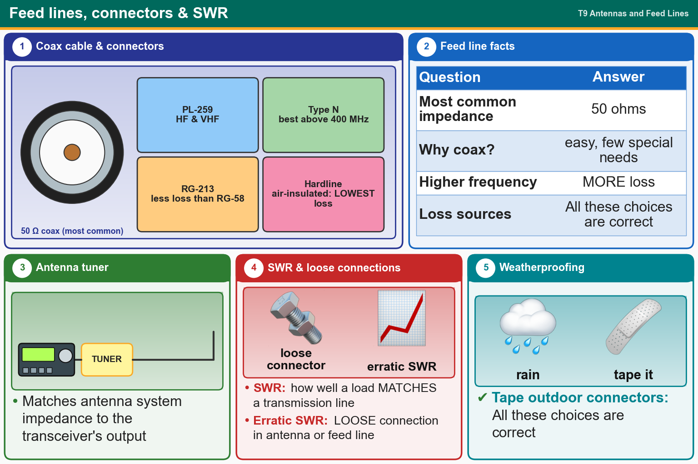

💡 50 Ω coax. Higher frequency = more loss. Type N above 400 MHz. Hardline has the lowest loss.
📚 Key words
- Coax
- Coaxial cable, the most common feed line (easy to use). Usually 50 ohms.
- Loss
- Signal lost in the cable. It grows with higher frequency, water, high SWR and many connectors.
- RG-58 / RG-213
- Coax types. RG-213 is thicker, with less loss.
- Hardline
- Rigid air-insulated cable. Lowest loss.
- Type N / PL-259 / BNC
- Connectors. Type N is best above 400 MHz. PL-259 is common on HF/VHF. Tape all of them outdoors.
- Antenna tuner
- Matches the antenna system's impedance to the radio's.
- SWR
- How well the load (antenna) matches the feed line. Erratic SWR = loose connection.
Press Check on any question to see if you're right (it won't show the answer), or Grade at the bottom to grade the whole page.
T9B02
What is the most common impedance of coaxial cables used in amateur radio?
✔A.50 ohms
✘B.12 ohms
✘C.600 ohms
✘D.8 ohms
T9B03
Why is coaxial cable the most common feed line for amateur radio antenna systems?
✘A.It has less loss than any other type of feed line
✔B.It is easy to use and requires few special installation considerations
✘C.It can handle more power than any other type of feed line
✘D.It is less expensive than any other type of feed line
T9B05
What happens as the frequency of a signal in coaxial cable is increased?
✘A.The characteristic impedance decreases
✘B.The characteristic impedance increases
✔C.The loss increases
✘D.The loss decreases
T9B08
Which of the following is a source of loss in coaxial feed line?
✘A.Water intrusion into coaxial connectors
✘B.Multiple connectors in the line
✘C.High SWR
✔D.All these choices are correct
T9B10
What is the electrical difference between RG-58 and RG-213 coaxial cable?
✔A.RG-213 cable has less loss at a given frequency
✘B.RG-58 cable can handle higher power levels
✘C.There is no significant difference between the two types
✘D.RG-58 cable has two shields
T9B11
Which of the following types of feed line has the lowest loss?
✔A.Air-insulated hardline
✘B.75-ohm flexible coax
✘C.Multi-conductor unbalanced cable
✘D.50-ohm flexible coax
T9B06
Which of the following connector types is most suitable as an RF connector for frequencies above 400 MHz?
✔A.Type N
✘B.DB-25
✘C.PL-259
✘D.RS-213
T9B07
Which of the following is true of PL-259 type coax connectors?
✘A.They are preferred for microwave operation
✔B.They are commonly used at HF and VHF frequencies
✘C.They are watertight
✘D.They are a bayonet-type connector
T9B04
What is the major function of an antenna tuner (antenna coupler)?
✘A.It automatically selects the proper antenna for the frequency band being used
✘B.It helps a receiver automatically tune in weak stations
✔C.It matches the antenna system impedance to the transceiver's output impedance
✘D.It allows an antenna to be used on both transmit and receive
T9B12
What is standing wave ratio (SWR)?
✘A.The ratio of amplifier power output to input
✔B.A measure of how well a load is matched to a transmission line
✘C.An indication of the quality of your station’s ground connection
✘D.The transmitter efficiency ratio
T9B09
What can cause erratic changes in SWR?
✘A.Overload from a strong local station
✘B.Over-modulation
✘C.Local thunderstorm
✔D.Loose connection in the antenna or feed line
T9B01
Which of the following connectors should be carefully taped for weather protection when used outdoors?
✘A.BNC
✘B.PL259
✘C.Type N
✔D.All these choices are correct